Najpierw musimy utworzyć konto na hostingu. Z całego serca polecamy ServerProject.pl który wspierał FullServer przez cały okres jego działania i nigdy nas nie zawiódł.
Aby zarejestrować konto przechodzimy pod adres https://admin.serverproject.pl/register.php i wypełniamy formularz. Następnie odbieramy e-mail potwierdzający rejestrację i logujemy się na swoje konto.
W zakładce 'zamówienie > utwórz nowe zamówienie' tworzymy nowy serwer tak jak na poniższym zrzucie ekranu (kliknij żeby powiększyć):
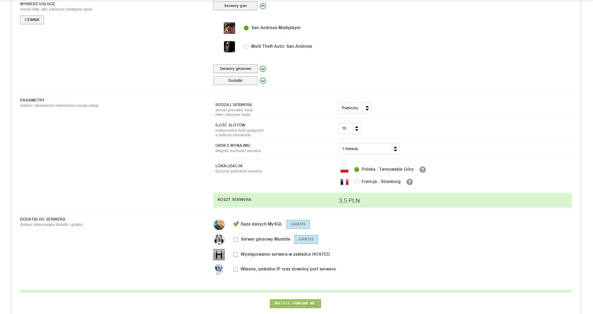
Teraz musimy opłacić nasze serwery aby zostały aktywowane:
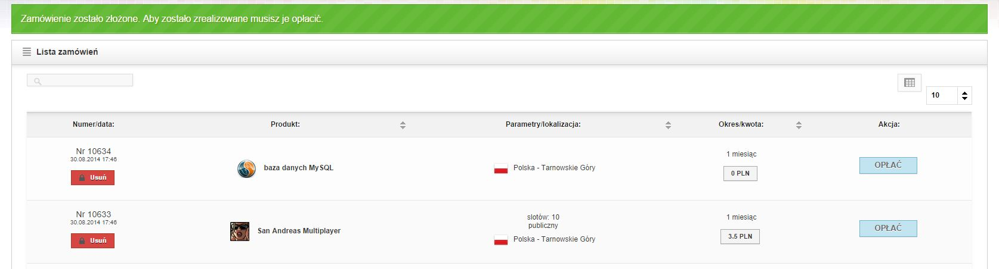
Kiedy już opłacimy nasze serwery przechodzimy do kolejnego punktu.
W Panelu ServerProject przechodzimy do 'usługi' i klikamy 'instaluj' obok bazy danych MySQL:
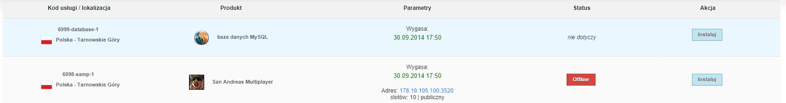
Przechodzimy do 'zarządzanie' i spisujemy dane dostępowe do naszej bazy danych. Pamiętaj aby zapisać je w bezpiecznym miejscu i nie podawać losowym osobom!
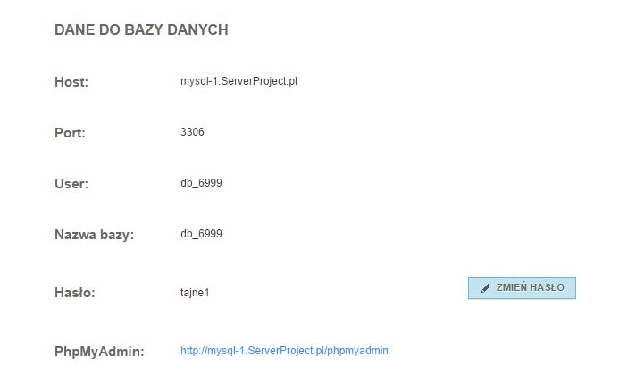
Klikamy w link phpMyAdmin i logujemy się za pomocą tych danych.
Po zalogowaniu klikamy w naszą bazę danych po lewej stronie, po prawej w zakładkę import, wybieramy plik i wskazujemy plik svn/schema/schema_data.sql który znajduje się w archiwum które pobrałeś.
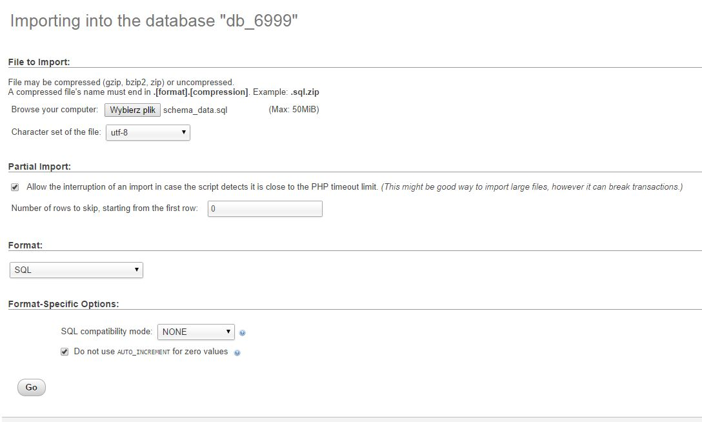
Jeszcze przycisk wykonaj i gotowe.
Przechodzimy do folderu svn/gamemode/gamememodes i znajdujemy plik make2.bat. Otwieramy go naszym ulubionym edytorem tekstowym (my polecamy Notepad++).
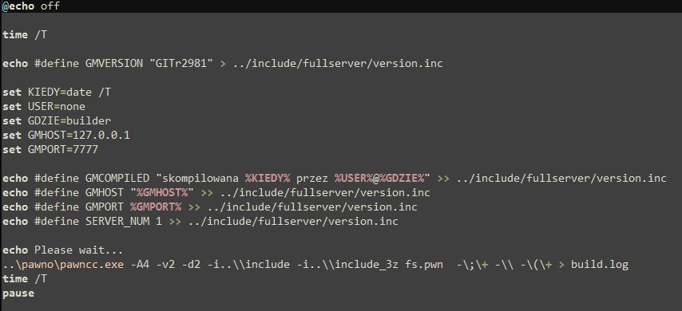
Znajdujemy linijkę set GMHOST=127.0.0.1 i zamieniamy IP na adres na którym chcemy odpalić nasz serwer. Tak samo postępujemy z następną linijką (set GMPORT=7777). Teraz lokalizjemy linijkę set GMKEY=TWOJ_KOD_Z_SMSA i zamieniamy jej wartość na kod zwrotny z SMSa.
Teraz przechodzimy do katalog svn/gamemode/include/fullserver i lokalizujemy plik fs_header.inc. Znowu otwieramy go edytorem tekstu i znajdujemy linijkę #define SALT_ALOGIN "KiciaWielebny". Zamieniamy treść pomiędzy cudzysłowiami na losowy ciąg znaków. To będzie unikalna sól służąca do zabezpieczenia hasła admina przechowywanego w bazie. Następnie przechodzimy do pliku utility_functions.inc i do linijki format(hashed, sizeof hashed, "%snhugdij89^Dhcd%s", playerName, password);. Zastępujemy ciąg znaków pomiędzy dwoma %s na inny losowy ciąg. To będzie nasza sól służąca zabezpieczeniu haseł graczy. BARDZO WAŻNE JEST ABYŚ NIE POMIJAŁ TEGO PUNKTU. W PRZECIWNYM WYPADKU TWÓJ SERWER MOŻE BYĆ NARAŻONY NA ATAKI W PRZYPADKU WYCIEKU BAZY DANYCH!
Ponownie wracamy do svn/gamemode/gamememodes i klikamy dwukrotnie na make2.bat. Otworzy się okno konsoli:
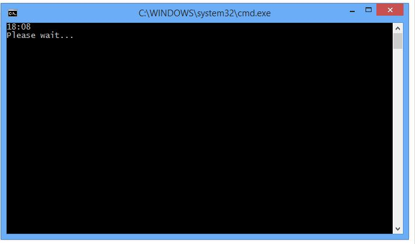
Poczekaj aż konsola wyświetli tekst Press any key to continue... i zamknij ją wciskając dowolny klawisz.
Przejdź do pliku build.log w katalogu svn/gamemode/gamememodes i otwórz go edytorem tekstu. Zweryfikuj, że kompilator nie zwrócił żadnych błędów. Jeżeli wszystko się udało log powinien wyglądać podobnie do tego:
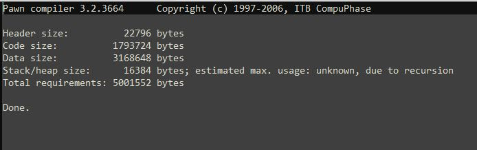
Instalujemy serwer SA-MP identycznie jak w przypadku serwera MySQL. Pamiętaj aby wybrać najnowszą dostępną wersję SA-MP. Po zainstalowaniu spisz dane dostępowe do konta FTP i zainstaluj klienta FTP. My polecamy program FileZilla
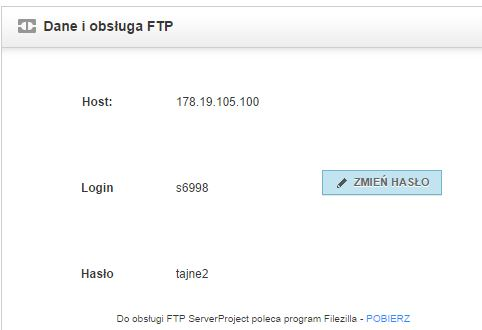
Łączymy się przy użyciu wcześniej zapisanych danych i wykonujemy po kolei te polecenia:
Uruchamiamy serwer i czekamy chwilę. Serwer powinien sam się wyłączyć. Sprawdzamy logi. W tej chwili ostatnie linijki w logach powinny wyglądać tak jak na zrzucie poniżej. Jeżeli z jakiegoś powodu nie wyglądają tak sprawdź ponownie wszystkie kroki powyżej.
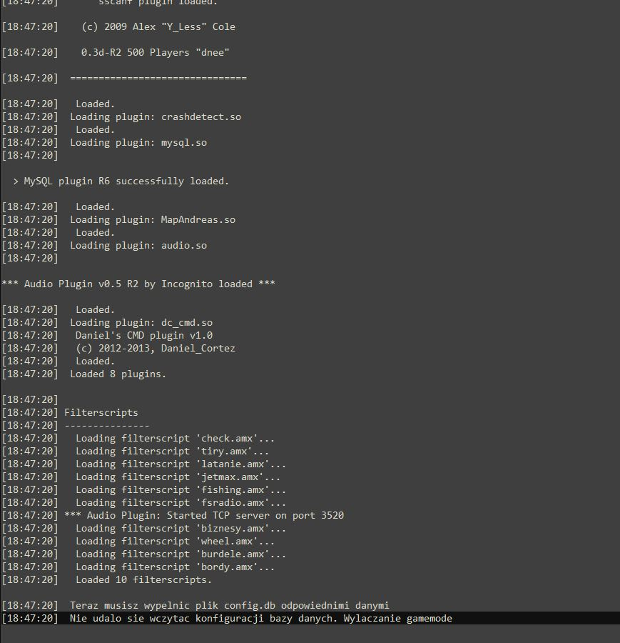
Jeżeli wszystko się zgadza przechodzimy w FTP do folderu scriptfiles/FullServer i pobieramy plik config.db
Teraz musimy zainstalować edytor SQLite. My polecamy SQLite Expert Personal
Po zainstalowaniu edytora SQLite otwieramy nasz plik config.db i zaznaczamy tabelę mysql_config
Klikamy ikonkę [+] aby dodać nowy rekord
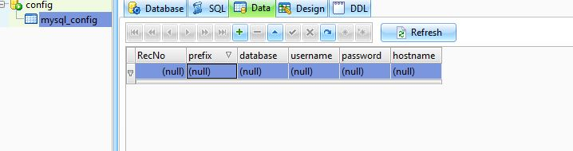
Teraz klikamy 2x na puste pole gdzie pisze (null) i powinno nam się otworzyć okno edycji rekordu.
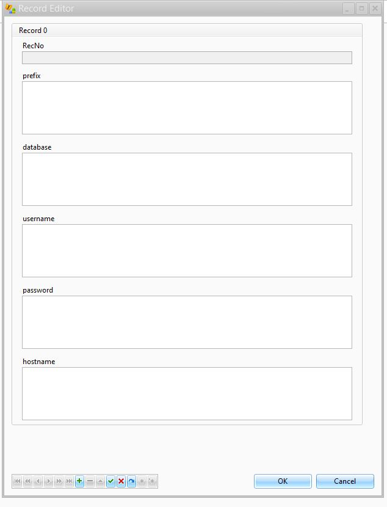
Wypełniamy po kolei pola pomijając pierwsze (RecNo)
Zapisujemy plik i wgrywamy na serwer FTP.
Ponownie uruchamiamy serwer. Czekamy chwilę i serwer powinien być już online. Aby się upewnić że wszystko jest okej otwieramy logi i sprawdzamy ostatnie linijki. Powinny wyglądać tak jak na zrzucie poniżej:
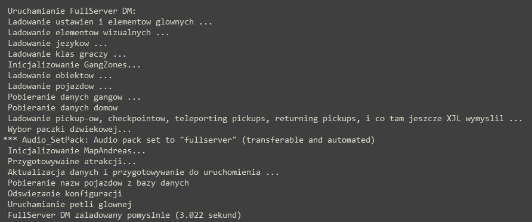
Wchodzimy na serwer i rejestrujemy konto które będzie kontem RCON.
Ponownie logujemy się do phpMyAdmin i przechodzimy do tabeli fs_players. Znajdujemy nasze konto i klikamy 'edytuj'.
Przy wartości level wpisujemy 4 i klikamy 'zapisz'.
Ponownie wchodzimy na serwer i logujemy się. Po zalogowaniu się wpisujemy /rcon login hasloRCON gdzie hasloRCON to hasło RCON jakie ustawiliśmy.
Wyświetli się informacje, że zalogowaliśmy się na RCON. Wpisujemy teraz komendę /ahaslo hasloADMIN gdzie hasloADMIN to hasło admina jakie chcemy ustawić. Podajemy je tylko adminom. Pamiętaj, że admin musi wpisać hasło ze spacją na końcu - tej spacji nie podaje się przy ustawianiu hasła.
Trochę przydatnych informacji: